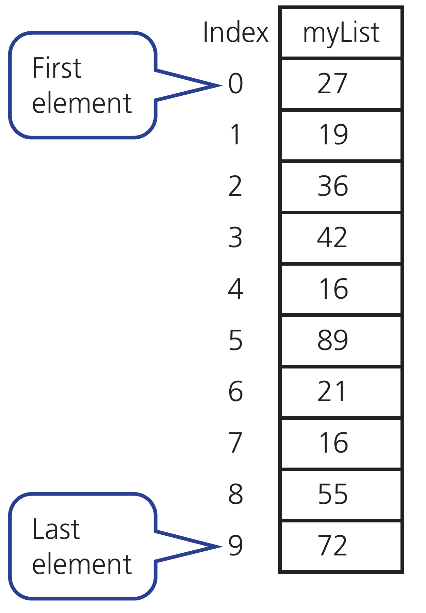
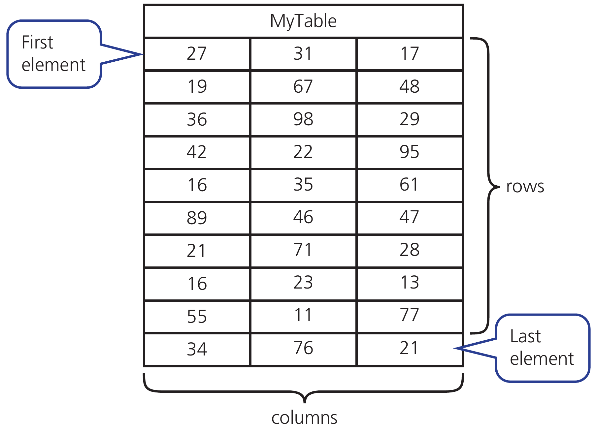

Ask students to predict first, explain their reasoning, then compare with the model answer. Use the linked chapter workbook for independent practice.
8.1 · Subprograms · 17
Functions return a value
A procedure is called to carry out a task.
A function returns a value that can be used in an expression.
Parameters carry values into the subprogram.
FUNCTION Double(X : INTEGER) RETURNS INTEGER
RETURN X * 2
ENDFUNCTION
OUTPUT Double(Scores[1])
OUTPUT Double(10)
Check your understanding
Which item is the parameter, and which values are arguments?
Show model answer
X is the parameter in the definition. Scores[1] and 10 are arguments in the calls.
Teacher notes / 教师提示
Add a procedure example orally: PROCEDURE ShowScore(Value : INTEGER), OUTPUT Value, ENDPROCEDURE; invoke with CALL ShowScore(10).
8.1 · Function trace · 18
A function call: arguments and return value
Arguments fill the parameters for one call.
RETURN sends one result back to the calling expression.
FUNCTION MeanOfTwo(A : REAL, B : REAL)
RETURNS REAL
RETURN (A + B) / 2
ENDFUNCTION
Result ← MeanOfTwo(8, 12)
OUTPUT Result
Check your understanding
What value does MeanOfTwo(8, 12) return?
Show model answer
10. The returned value can be assigned, displayed or used in another calculation.
Teacher notes / 教师提示
Ask students to predict first, explain their reasoning, then compare with the model answer. Use the linked chapter workbook for independent practice.
8.1 · Scope and maintainability · 19
Local and global scope
A local variable is accessible within its subprogram.
A global variable can be accessed across the program in its declared scope.
Prefer parameters and return values when they make dependencies clearer.
Check your understanding
Why is changing an unrelated global Total inside a function risky?
Show model answer
Other parts of the program may depend on Total. The side effect makes behaviour harder to trace and reuse.
Teacher notes / 教师提示
Maintenance checklist: meaningful names; short subprograms; comments explaining non-obvious purpose; consistent indentation. Avoid comments that merely repeat every line.
8.1 · Library routines · 20
ROUND and RANDOM
Version 6 permits ROUND on an identifier or an expression.
RANDOM() returns a value from 0 to 1 inclusive in Cambridge pseudocode.
Different programming languages have different random-number APIs.
Mean ← ROUND(Total / Count, 2)
R ← RANDOM()
Remainder ← 17 MOD 5
Quotient ← 17 DIV 5
Check your understanding
Does ROUND(RANDOM() * 6, 0) model a fair six-sided die?
Show model answer
No. It can return 0 and the rounding intervals are not equally wide. In classroom Python, use randint(1, 6) for a die.
Teacher notes / 教师提示
Source: 2026–2028 syllabus Version 6, page 41. Count must be positive before the division. The die is a reasoning extension, not an extra required library routine.
8.1 · Maintainability · 21
Maintainable programs
Names describe the data or task.
Comments explain a rule or reason.
A subprogram keeps one reusable task in one place.
Less clear
More informative
X
TotalMinutes
P1
ReadValidScore
20 in several conditions
Named constant MaxScore
// add 1
// count one accepted entry
Check your understanding
Which comment explains the reason for the calculation?
Show model answer
“Convert minutes to hours for the report” explains purpose more clearly than “divide by 60”.
Teacher notes / 教师提示
Ask students to predict first, explain their reasoning, then compare with the model answer. Use the linked chapter workbook for independent practice.
8.2 · Array indexing · 22
One-dimensional arrays
One index identifies one element.
This textbook example uses indexes 0 to 9.
The ten elements have the same data type.

Hodder p.330, Figure 8.10
Check your understanding
What value is stored at index 1 in the diagram?
Show model answer
19. Index 1 is the second element in this zero-based array.
Teacher notes / 教师提示
Ask students to predict first, explain their reasoning, then compare with the model answer. Use the linked chapter workbook for independent practice.
8.2 · One-dimensional arrays · 23
Declaring and traversing an array
One identifier names a collection of elements with one data type.
An index selects an element. Keep every index within the declared bounds.
DECLARE Scores : ARRAY[1:5] OF INTEGER
FOR Index ← 1 TO 5
INPUT Scores[Index]
NEXT Index
OUTPUT Scores[3]
Check your understanding
Which index is invalid for Scores: 0, 1 or 5?
Show model answer
0 is invalid for the declared 1…5 bounds. Zero-based arrays are also allowed if used consistently.
Teacher notes / 教师提示
Use a row of five labelled boxes on the classroom board and trace reads and writes.
8.2 · Bounds · 24
Array bounds and element count
The declaration determines every legal index.
For inclusive bounds, count = upper − lower + 1.
Declaration
Legal indexes
Elements
ARRAY[1:5]
1 through 5
5
ARRAY[0:4]
0 through 4
5
ARRAY[1:3, 1:2]
Rows 1–3, columns 1–2
6
Check your understanding
How many elements does ARRAY[0:4] contain?
Show model answer
Five, at indexes 0, 1, 2, 3 and 4.
Teacher notes / 教师提示
Ask students to predict first, explain their reasoning, then compare with the model answer. Use the linked chapter workbook for independent practice.
8.2 · Two indexes · 25
Two-dimensional arrays
The first index selects a row. The second selects a column.
This textbook diagram uses row and column indexes starting at 0.

Hodder p.331, Figure 8.11
Check your understanding
What is MyTable[1, 2] in the diagram?
Show model answer
48, in the second row and third column.
Teacher notes / 教师提示
Ask students to predict first, explain their reasoning, then compare with the model answer. Use the linked chapter workbook for independent practice.
Reset a row total inside the outer loop, before the inner loop.
DECLARE Mark : ARRAY[1:3, 1:2] OF INTEGER
// Assume Mark has already been populated
FOR Student ← 1 TO 3
Total ← 0
FOR Quiz ← 1 TO 2
Total ← Total + Mark[Student, Quiz]
NEXT Quiz
OUTPUT Total
NEXT Student
Check your understanding
How many additions are performed for 3 students and 2 quizzes?
Show model answer
Six additions. Each of the three row totals receives two values.
Teacher notes / 教师提示
Assume all array values have been populated before this fragment. Ask what happens if Total is initialised only once before both loops.
8.2 · Nested-loop trace · 27
A row-total trace
Mark contains rows [4, 7], [2, 20], [0, 6].
Reset Total when a new student starts.
Student
Quiz 1
Quiz 2
Output Total
1
4
7
11
2
2
20
22
3
0
6
6
Check your understanding
What would happen if Total were initialised only once?
Show model answer
The outputs would be cumulative: 11, 33 and 39 instead of 11, 22 and 6.
Teacher notes / 教师提示
Ask students to predict first, explain their reasoning, then compare with the model answer. Use the linked chapter workbook for independent practice.
8.3 · Writing a file · 28
Writing persistent data
Open the file in WRITE mode before writing.
Close it when the operation finishes.
WRITE can replace existing contents.
OPENFILE "summary.txt" FOR WRITE
Line ← "Ada,20"
WRITEFILE "summary.txt", Line
CLOSEFILE "summary.txt"
Check your understanding
What should the file contain after this code?
Show model answer
A line containing Ada,20. Reopen the file in READ mode to check it.
Teacher notes / 教师提示
Ask students to predict first, explain their reasoning, then compare with the model answer. Use the linked chapter workbook for independent practice.
8.3 · File handling · 29
Reading a file until the end
Variables normally disappear when a program finishes; files preserve data.
Open a file in the intended mode, read or write, then close it.
Writing to a file may replace its previous contents.
OPENFILE "scores.txt" FOR READ
WHILE NOT EOF("scores.txt") DO
READFILE "scores.txt", Line
OUTPUT Line
ENDWHILE
CLOSEFILE "scores.txt"
Check your understanding
What must be checked before reading repeatedly to the end of a file?
Show model answer
Use an end-of-file check so the program does not attempt to read past the final line.
Teacher notes / 教师提示
Writing counterpart: OPENFILE "result.txt" FOR WRITE; WRITEFILE "result.txt", Line; CLOSEFILE "result.txt". Student task: read a name, save it, reopen and display it.
8.3 · Read trace · 30
The file cursor and EOF
Suppose the file has two lines: Ada,20 and Ben,15.
Check for end of file before reading another line.
Before reading
EOF?
Action
At first line
FALSE
Read and output Ada,20
At second line
FALSE
Read and output Ben,15
After final line
TRUE
Leave loop and close file
Check your understanding
Why should the program check EOF before READFILE?
Show model answer
There may be no next line to read, including when the file is empty.
Teacher notes / 教师提示
Ask students to predict first, explain their reasoning, then compare with the model answer. Use the linked chapter workbook for independent practice.
8.1–8.3 · Integration · 31
Complete programming task
Read five validated scores into an array.
Calculate total, mean and highest using named subprograms.
Save a summary; then reopen it to confirm the result.
Check your understanding
Which tests cover both validation and calculation?
Show model answer
Try all zeros, all twenties, mixed scores, a rejected −1 and 21, and invalid text. Verify expected totals, means, highest values and saved output.
Teacher notes / 教师提示
Suggested lesson 4: practical project. Start with the student brief and use the supplied Python model only after planning. For the exam 15-mark scenario, pseudocode, Python, Visual Basic or Java are allowed; use pseudocode for other coding questions.
2D arrays · trace a row total
Mark = [[4, 7], [2, 20], [0, 6]]. Indexes shown here start at 1.
Sources: supplied CUP and Hodder textbooks; 2026–2028 syllabus Version 6. Explanations and checks are original classroom materials. Answers are teaching models, not official mark schemes.